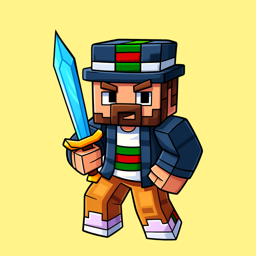

_Luky_Cz_
Ahoj, jmenuji se _Luky_Cz_, je mi 16 let. Mám rád vývoj webových stránek, programování a hraní her. Ve volném čase rád chodím na procházky. Mým snem je stát se profesionálním vývojářem aplikací a dalších zajímavých věcí!


Zůčastněné projekty
Seznam projektů, kterých jsem se zúčastnil za dobu mé kariéry